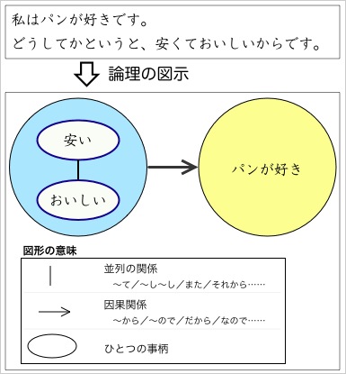
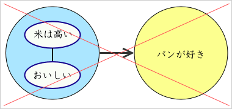
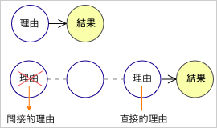
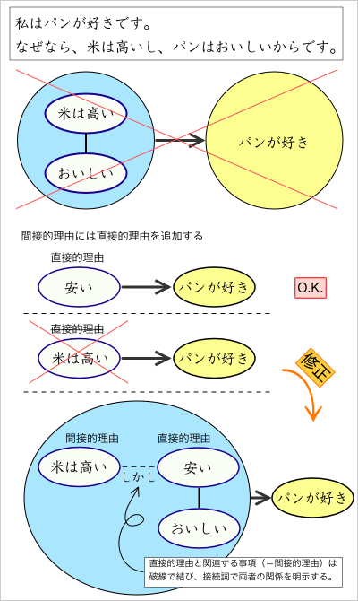
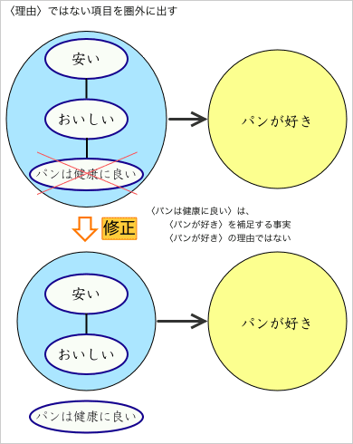
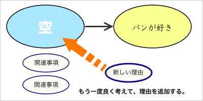
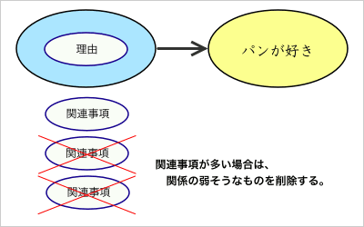
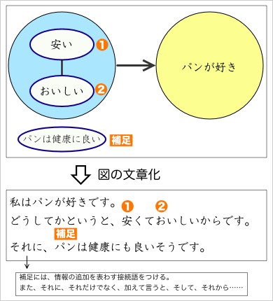
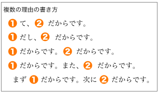

理由・根拠
意見文は、自分の意見を書くものである。ただ、自分の意見を書くときには、その理由や根拠をいっしょに書かなければならない。自分の意見だけを書いたのでは、読んだときにわかりづらく、また、説得力もないものになってしまう。
理由を書く
以下では、理由の書き方を練習しよう。
賛成ですか？反対ですか？
以下のテーマで作文を書いてみよう。字数は短くても構わない（目安：80〜200字）。
♦ 台湾では、2009年から飲食店が全面禁煙になりました。あなたは、飲食店の全面禁煙に賛成ですか？反対ですか？また、その理由は何ですか？
論理の図示
ここでは、理由を表わす文章を図（イラスト）にして示すことを考えよう。
まず、
私は、パンが好きです。どうしてかというと、安くておいしいからです。
という文章について考えよう。この文章は、下図のように図示してみることができる。

まず、『私は、パンが好きです。』という文が、この文章の中心（結果・結論）である。図では、これを右側に書き、○で囲む。なお、ひとつの○は、ひとつの事柄に対応している。
次に、『どうしてかというと、安くておいしいからです。』は、理由表わす文である。理由を表わす接続語（＝「どうしてかというと」）を使って、〈パンが好き〉の理由を述べている。図では、これを左側に書き、○で囲む。ただし、この文には、理由が２つ（〈安い〉と〈おいしい〉）書いてあるため、それぞれを小さな○で囲み、実線（｜）で結ぶ。なお、この実線（｜）は並列の関係を表わしている。
最後に、左右の２つの○を矢印（→）で結ぶ。なお、この矢印は、左側の○が右側の○の理由や原因となる関係（因果関係）を表わしている。
♦ 「飲食店の全面禁煙」について、あなたが書いた作文を、上の図の書き方で図示してみましょう。
間接的理由・関連事項
作文の論理が図示できたら、内容を確認してみよう。
間接的理由
たとえば、次の作文について考えてみる。
私は、パンが好きです。なぜなら、米は高いし、パンはおいしいからです。
これを下の図のように図示するのは正確ではない。なぜなら、『米は高い』というのは、『パンが好き』の直接的理由ではないからである。


ここで、直接的理由と間接的理由を区別してみよう。まず、右の図のように、ある事柄がひとつの結果と直接結びついているとき（図／上）、その事柄は理由であるといえる。一方、ある事柄が、他の事柄を通じてひとつの結果と結びついているとき（図／下）、理由となるのは左端に書かれた事柄ではなく、結果と直接結びついている事柄であると考える方がよいだろう。このとき、結果と直接結びついている事柄を直接的理由と呼び、直接的理由と結びついている事柄を間接的理由と呼ぶことにする。
ここで、前の例について考えてみる。
私は、パンが好きです。なぜなら、米は高いし、パンはおいしいからです。
ここで、『米は高い』は、直接『パンが好き』と結びついているわけではなく、
［米は高い］しかし、［パンは安い］だから、［パンが好き］
のように、間接的に結びついていると考えられる。

したがって、この文章を図示するときには、左図のようにする。
具体的には、間接的理由に対して、適切な直接的理由を追加する。
そのとき、間接的理由と直接的理由とは破線で結び、接続詞（しかし、そして、だから……）で両者の関係を明示するようにする。
♦ あなたが書いた図をチェックしましょう。『理由』の○の中に間接的理由があれば、上の例を参考にして書き直しましょう。
関連事項
たとえば、次の作文について考えてみる。
私は、パンが好きです。なぜかというと、パンは健康にもいいし、安くておいしいからです。

この例では、理由となる事柄と理由にはならない事柄とを区別しなければならない。
具体的には、『パンは健康にもいい』というのは、『パンが好き』な理由ではない。自分の好きな食べ物が健康にも良ければさらにうれしいというだけで、健康に良いから好きだというわけではない。つまり、『パンは健康にもいい』というのは、『パンが好き』を補足する関連事項であり、理由ではないのである。
そのため、この文章を図示する際に、図の上のように『パンは健康に良い』という事柄を理由の○の中に入れてはいけない。下のように理由の○の外に出さなければならない。なお、関連事項は、理由の○の下に並べて書くようにする。
♦ あなたが書いた図をチェックしましょう。『理由』の○の中に関連事項があれば、上の例を参考にして書き直しましょう。
なお、関連事項を理由の○の外に出した結果、理由の○の中に理由がひとつもなくなってしまった場合は、理由を再考しなければならない。

また、関連事項が多すぎる場合には、関連が薄いと思われる関連事項を削除するなどして整理する必要がある。

図の文章化

ここでは、図を文章に書き換える方法について考える。
図の中では、理由の○の中にある事柄のそれぞれが、矢印（→）で結ばれた右側の○に対する理由になっている。また、理由の○の外にある関連事項は、内容を補足するものとなっている。
図を文章に書き換えるには、まず、右側の○の内容を最初に書けばよい（これが、文章の中心になる）。
次に、理由を表わす接続語（「なぜなら」「なぜかというと」「どうしてかというと」「そのわけは」「その理由は」……）を書いて、その後ろに、理由の○の中にある事柄の内容を順番に書いてゆけばよい。
なお、複数の理由を書く書き方には、以下のようなものがある。

理由を書いたら、最後に、関連事項を補足として書けばよい。
なお、補足を書くときには、補足（内容の添加）を表わす接続語（「また」「それに」「それだけでなく」「加えて言うと」「そして」「それから」……）を使った方がよいだろう。
♦ あなたの描いた図から、作文を書いてみましょう。
図で論理を考える
作文を書く前に図で論理を考えるのは、わかりやすい作文を書くための有効な方法である。
以下のテーマで作文を書いてみよう。まず、図を描き、次にその図から、作文を書いてみよう。
♦ 台湾で景気対策として「消費券」を配布したことに、あなたは賛成ですか？反対ですか？また、その理由は何ですか。